Hi, my name is Vinay.
I like robotics.

Learn More

I like robotics.

I am a senior at Lynbrook High School in San Jose, California. I am extremely passionate about pursuing robotics and engineering. I participate in the FIRST Tech Challenge and continue to build metal robots in my garage and at school.
I am also an avid coder and have worked on various projects that involved programming languages such as JAVA, Python, and HTML. On weekends, I enjoy participating in MLH hackathons.
My goal is to make the world a better place innovating new ideas and rethinking current methods. For this reason, at school I challenge myself to take harder classes. Currently, I am taking AP Chemistry and have finished AP Physics and Statistics last year.
Feel free to send me an email about any opportunities or questions!
Blue Stamp Engineering | 2015

In this summer program, I planned, designed, and built a robotic hand controlled by myoelectric signals in the forearm. The goal was to create a low cost, reproducible, and advanced hand prosthetic to solve the current problem of limited and expensive prosthetics. I gained experience working with 3D printing process as well as with the design process to go from scratch to a final product. I continued this project and displayed at the Pre-Collegiate Stanford Science Conference and the Synopsys Science Fair.
NASA SEES Internship | 2016

During this research internship at the J.J Pickle Research Center in partnership with UT Austin, I worked with the MAGIC (Mid-American Geospatial Information Center), to create a web app to help emergency responders. Specifically, I developed a real-time world earthquake map to provide information such as location and dangers about events. Aside from my main project, I learned how NASA responds to natural disasters, the importance of remoter sensing, and the bodies and physics of outer space.